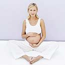

Взвесим наши возможности! |
|||||||||||||||||||||||||||||||||||||||||||||||||||||||||||||||||||||||||||||||||||||
|---|---|---|---|---|---|---|---|---|---|---|---|---|---|---|---|---|---|---|---|---|---|---|---|---|---|---|---|---|---|---|---|---|---|---|---|---|---|---|---|---|---|---|---|---|---|---|---|---|---|---|---|---|---|---|---|---|---|---|---|---|---|---|---|---|---|---|---|---|---|---|---|---|---|---|---|---|---|---|---|---|---|---|---|---|---|
|
До 26-й недели беременности, если все идет благополучно, врач осматривает пациентку 1 раз в месяц, а затем - 2 раза в месяц. Взвешивание становится обязательной процедурой каждого визита к гинекологу и частью «домашнего задания». Выполнять его лучше утром, натощак и в одной и той же одежде, чтобы полученные показатели можно было потом сравнивать.
 В первые 2 месяца, пока малыш и мама только приспосабливаются к взаимному сосуществованию, женщина в весе обычно не прибавляет. К тому же в это время ее может беспокоить токсикоз, который часто приводит к потере веса. Итак, в 1-м триместре беременности интенсивной прибавки в весе не происходит, будущая мама обычно набирает 1-2 кг. Основные события происходят позже, ведь масса тела будущей мамы увеличивается в основном во 2-й половине беременности, когда еженедельная прибавка в весе составляет в среднем 250-300 г. Если процесс идет быстрее, это может означать появление проблемы - скрытых, а затем и явных отеков (водянки беременных). Давайте рассмотрим общие правила, которые приняты среди врачей для расчета возможной прибавки. Итак, за все 9 месяцев беременности будущая мама должна набрать 10-12 кг. Считается, что, начиная с 30 недель беременности, вес женщины возрастает примерно на 50 г в сутки, на 300-400г. в неделю и не более чем на 2 кг в месяц. Чтобы поточнее определить допустимую прибавку веса и учесть все дополнительные обстоятельства, доктор может воспользоваться таблицей (см. вставку). Кроме того, в распоряжении врача находится и шкала средней физиологической прибавки массы тела в последние 3 месяца беременности. Расчет получает такой: еженедельная прибавка веса не должна превышать 22 г на каждые 10 см роста. Это значит, что при росте 150 см женщина может прибавить за неделю 330 г, при росте 160 см - 352г, а при 180 - 400г.
На сколько килограммов поправится будущая мама во время беременности, зависит от множества причин.
А теперь давайте посмотрим, на что «уходят» те самые10-12 килограммов приобретенного будущей мамой веса. Действительно, ведь если она поправилась за беременность, как и рекомендуется, на 12 кг, у нее родился ребенок весом 3 кг 300 г., где же все остальные? Они распределяются так:
Итого: 12100 г. А за счет чего может появиться «перебор»? Наш расчет показывает, что излишняя прибавка веса зависит от разных обстоятельств; веса ребенка (крупный плод), количества жировой ткани (прибавка в весе при его начальном дефиците), околоплодных вод (в случае многоводия) и тканевой жидкости (если жидкость в организме задерживается). Если первые два обстоятельства - явления нормальные, то последние два - отклонения от нормы, они требуют внимания врача.
Случается, что будущая мама принимает решение соблюдать строгую диету, чтобы... не поправиться. Кто-то боится испортить фигуру, а кто-то (в основном женщины с узким тазом) считает, что ограничения в еде приведут к рождению небольшого по весу ребенка. И в первом, и во втором случае эти доводы ошибочны. Если женщина прибавит за беременность 10-12 кг, то с помощью разумной диеты и занятий гимнастикой она обязательно вернет себе прежние размеры. Подумайте, ведь, например, балерины быстро возвращаются в форму после родов, хотя за беременность они обычно прибавляют до 18-20 кг! Вы можете рассчитать допустимую прибавку в весе сами. Для этого вам нужно знать свой рост и исходный вес, который затем превращается в индекс BMI (body mass index). Подсчитайте свой BMI: ВМI = вес (кг) [рост (м)]2 Результаты: BMI<19, 8 - женщины худощавого телосложения; BMI=19, 8-26, 0 – женщины среднего телосложения; BMI>26 - женщины тучного телосложения. Пример: Рост - 1,60 м, вес - 60 кг, BMI=60/ (1.60)2 = 2, 30 Получается, что женщина имеет среднее телосложение, а это значит, что на сроке 30 недель оптимальной прибавкой в весе для нее будет 9,1 кг, а на сроке 40 недель - 13,6 кг. Старайтесь оставаться активной - плавайте, гуляйте, занимайтесь йогой. После родов вам будет гораздо легче вернуться к прежним формам! Все женщины поправляются во время беременности по-разному в зависимости от исходного веса.
| |||||||||||||||||||||||||||||||||||||||||||||||||||||||||||||||||||||||||||||||||||||
<На главную> <Назад> <Далее> |
|||||||||||||||||||||||||||||||||||||||||||||||||||||||||||||||||||||||||||||||||||||